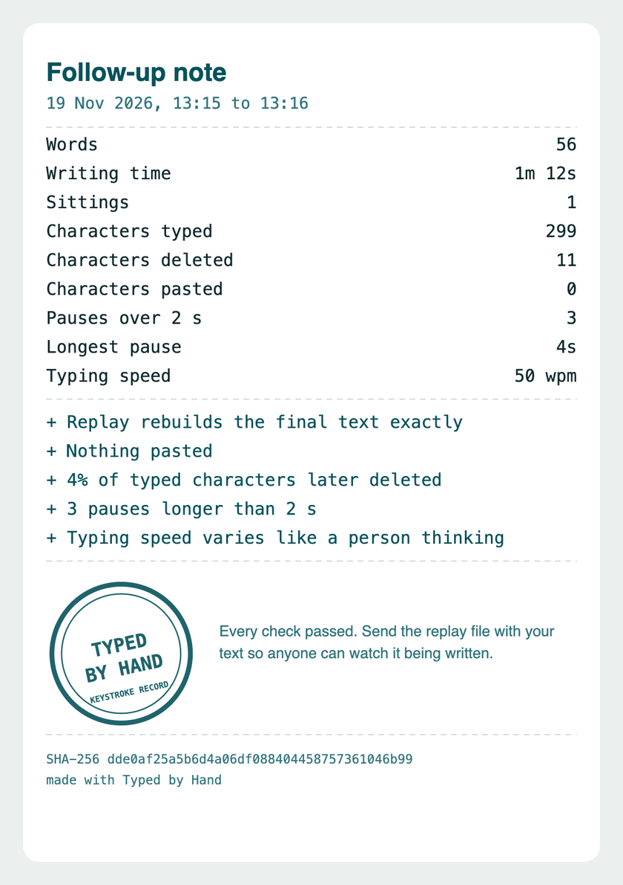
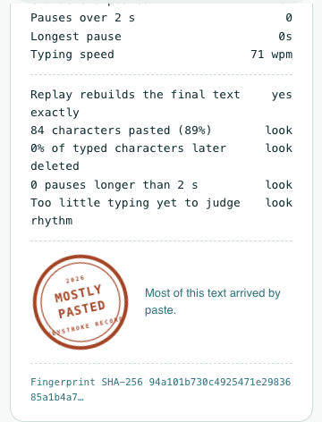

A writing pad with a typing replay
Typed by Hand records every keystroke of your page on your device, then plays it back typo by typo. Share a replay file, a receipt or a 9:16 video. Free and open source.
Live typing record beside every page
Each insert, deletion and paste is logged as you write. The Live panel counts writing time, words, typed, deleted, pasted and pauses, and charts characters per minute. See the receipt
Receipt with 5 checks and a stamp
The receipt sums up the record and runs five checks. Its stamp reads Typed by hand only when all five pass; otherwise Check the replay or Mostly pasted.
The checks: the replay rebuilds the exact text, the share pasted, the share deleted, pauses over 2 s and the typing rhythm. Save it as a PNG to attach or post.

Replay file that checks itself
Save replay file writes one HTML page with the whole record and a SHA-256 fingerprint. Anyone opens it in a browser, with no login and no link that expires.
Change one letter of this note and the file says the record no longer matches.
Follow-up note
56 words · 1m 12s writing · 1 sitting(s) · 11 deleted · 0 pasted · 3 pauses
Record intact: replay rebuilds the text, fingerprint dde0af25a5b6d4a0… matches
9:16 video of the page writing itself
Save video records a 1080 by 1920 clip of your page being typed, sized for a story or a reel.
MP4 in Chrome, tested. Other browsers save MP4 or WebM, untested.
What a replay cannot show
Typed by Hand shows how a text was made. It cannot show where the ideas came from.
A patient person can retype someone else's text by hand, and the rhythm check only flags very even typing.
Pasting it does catch. In a paste test, 84 of 94 characters arrived by paste, and the stamp read Mostly pasted.

Questions
About the record, the file and browsers.
Can't someone retype AI text by hand?
Yes. A patient person can fake a replay. It shows process, not origin, and the app says so.
Where is my writing stored?
In your browser's local storage on your device. The app makes no network requests.
What happens to replay records if I clear my browser?
Records live in the browser that opened the file. Save a replay file to keep one.
What does the replay file's fingerprint do?
It is a SHA-256 of the full record and text. If either changes after export, the replay file says the record no longer matches.
Can one writing pad keep several pages?
Yes. Each page has its own record, and Copy text copies a page in one click.
Which browsers does Typed by Hand work in?
Tested in Chrome on macOS. Safari, Edge and Firefox are not yet tested.
Typed by Hand is free, and so is its code
No account. Open it in your browser, or download the one HTML file and it runs offline.
The code is open under AGPL-3.0: read it, change it, run your own copy.